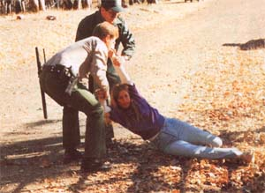

REPORT FROM AMERICA
Back- to-the-landers vs. the Feds
SAN FRANCISCO, CA- The two citizens had to look up to talk to the judge in his midnight robes on the dais above them. They, like the judge, had dressed in character. The man wore a blue denim fleece-lined jacket, tan chinos, calf-high boots; his wife a tan skirt, open-collared shirt and lowheeled shoes. The U.S. District Court loomed around them, 19 floors above Golden Gate Avenue in San Francisco.
One might suppose the setting would shrink them-and if not the setting, the task they'd set for themselves: Alone, without a lawyer or even a friend who could afford to come down from the woods to stand beside them on this day in March, they were suing the government of the United States of America to force it to let them cultivate a garden, drink the water and live in peace on 16O acres of their own land.
They didn't shrink a bit as they asked this latest of the judges they'd faced to shift the weight of the system to their side. Bill Rogers stands five feet ten; Janet Rogers almost as tall. They talked rapidly, urgently, observing the forms ("If it please Your Honor ...with your permission..."). Judge Thelton E. Henderson returned their courtesy. He promised he'd review their file and issue orders concerning procedure-were they in the right federal district, should they be in federal court at all and so forth. They thanked him and left, allowing themselves a moment of hope even though every government procedure they'd encountered in the past decade adds to Bill Rogers's bitter conclusion: "We're living the American Dream in reverse."
Part of the problem is that the U.S. Forest Service has the Rogerses surrounded. In March 1977, they bought their 160 acres, knowing it was within the Six Rivers National Forest in far northern California, but not knowing the events that lay ahead. They maintain that the Forest Service has been pointedly harassing them and thousands of other "inholders" across the nation - people who own property inside areas managed by the government - in order to discourage them, set up "precondemnation blight" and force them off their land. Whether or not anyone can prove the Feds are that well-coordinated or are molesting that many people in such ways, the Rogerses tell a tale that suggests frontier justice is still a fact of life in the remote areas of modern America.
Jan and Bill went to high school in Los Angeles in the '60s. Even as teenagers they knew what they wanted. "We were living in the wrong place," Jan says. To their parents' dismay, they opened a joint bank account to save up for a piece of land closer to wilderness.
They found it in the rugged, sparsely populated northwestern tip of California. First stop was a house in Zenia, population five. From there they scouted out the dream property they eventually bought in 1977. It sits at 4,000 feet on a ridgetop known as Little Round Mountain, half forested with oaks and firs, half meadowland. The nearest neighbors live more than two miles away.
They began cleaning out wells and ponds, planting fruit trees and vegetables and setting up shelter. Even in this remnant of the frontier, they soon discovered, they had opponents. Cattle strayed in, ate and broke things, brought flies and mess and fouled the water. The pesky cows belonged to a rancher who had a grazing permit on the surrounding Forest Service land. Bill and Jan asked him to keep his animals off their property, as the permit required him to do. They asked local Forest Service agents to enforce the regulation. Next thing they knew, the Forest Service had increased the number of cattle on the rancher's permit, and the nuisance grew worse. Complaint ... increase, complaint . . . increase; the couple claims the sequence occurred several times. The cattle kept coming: 22 intrusions between I982 and) 1985, according to one list Bill and Jan sent the foresters.
Hunters tramped through, shooting and carrying on. The cattle rancher roared in and out in a four-wheel-drive vehicle, looking for cows, he said. To Bill and Jan the Forest Service appeared unwilling, to say the least, to help them restrain the traffic. Besides making them feel besieged, all of this got in the way of the couple's livelihood:
hauling water (for forest-fire fighters, among others, blasting (for heavy construction, stump removal and the like and renting out big storage containers.
The problems with cattle and hunters turned into a running wrangle over a road on a Forest Service easement through the Rogers's property. This road provided a prime access point for the marauders. Bill and Jan wanted to put a gate across it. Request refused: can't restrict "public access." But, Bill and Jan said, we won't lock the gate. Besides, what "public"? The road stops at a washout and log barricade just beyond our place, so it leads where nobody but us ever goes. Refused. It's our land, the Rogerses said. No, it's our easement, the Forest Service said.
Well, the Rogerses put up a gate anyway. After years of argument, on the morning of December 12 1988, two Forest Service agents-at least one of them armed-three Trinity County sheriffs deputies and a contractor came out with a back hoe to tear the gate down.
Cops crowd in as if they've caught a murderer.They haul Sill's Bill's arms behind him,crank on handcuffs (so tightly that he loses circulation) and push him into a police car.
Before long, nine sympathetic neighbors showed up to serve as witnesses for Jan and Bill. One brought along a video camera. Nobody stopped him from using it.
The tape of the next couple of hours shows Bill greeting the agent by opening the gate and saying, "I want you fully within my property while we talk." He chains himself to the gate, which is decorated with a wreath and a little American flag. "I demand you get off my property now," he says. Jan chains herself to the gate, as does another woman. The agent speaks so quietly that the microphone seldom picks up his words. Bill, on the other hand, speaks his piece clearly. "There are no court documents, we have not been given a trial, we have not been given anything that legalizes this process," he declares. "You people are trespassing. I order you off - now."
"I'm standing on a government right-of-way," the agent says.
"Get off my property or put me under arrest," Bill responds. "Get your documents out, sir
The agent the agent shows no documents. Bill asks a deputy sheriff, whom he knows, "Prevent then from this if they don't have the documentation, which they don't have."
The deputies seem unwilling to arrest anyone. A Forest Service agent cuts Bill's chain and tells him he's under arrest. Cops crowd in as if they've caught a murderer. They haul Bill's arms behind him, crank on handcuffs (so tightly that he loses circulation and push him into a police car. Jan sobs loudly at the sight until they turn to her with the bolt cutters and handcuffs. She doesn't go easily, falling face down in the dirt, making them half-drag her away. The cops cuff the neighbor, too, and we see them being driven away. The tape ends before the backhoe does its work.
After a three-hour ride to jail and an overnight stay there, the three were driven to a magistrate's office in Redding, another three hours away, and marched in chains and handcuffs past the staring citizens of the town. Following some discussion of the charges, including interfering with a Federal officer, resisting arrest and posting NO TRESPASSING signs without a permit, the government agents put them outside and told them to find their own way home. The charges against them were later dismissed.
Bill and Jan don't live on the dream property now. They're back in Zenia, where they feel safer. Bill is convinced the Forest Service intends to consolidate its holdings and eliminate private inholders by the year 2000. "And they'll do it by any method necessary," he says. "Our place is remote; they can molest us out there behind a green curtain."
"We have suffered and been deprived of our basic constitutional rights."
This is just the citizen's side of the story, of course, and just a beginning; it should be instructive to look further at the government's side.
Meanwhile, Bill and Jan Rogers are suing, or attempting to sue, their own government for damages and vindication. "We have suffered and continue to suffer discrimination, harassment, abuse of process, loss of our liberty, the `taking' of our property without just compensation," they write in the complaint submitted to Judge Henderson, "and have been deprived of our constitutional rights ...as a result of a vendetta and conspiracy by petty functionaries of the Forest Service who have abused their powers. The petty bureaucrats obviously know that, with the federal government to back them up, they have all the power and we apparently have virtually none."
Invective aside, that may turn out to be the case. Judge Henderson, meanwhile, transferred the case to the Eastern District.
Stay tuned.
John Poppy, West Coast correspondent for Mother Earth News, is a columnist for Esquire and a contributing editor for In Health and Hippocrates.
|
 The showdown with, the Feds took place at the Rogers's gate and was videotaped. |
|
|